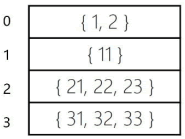
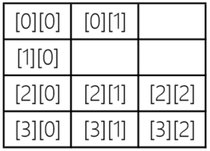

Java不规则数组
通过前面的学习我们知道 Java 实际上没有多维数组，只有一维数组。多维数组被解释为是数组的数组，所以因此会衍生出一种不规则数组。
规则的 4×3 二维数组有 12 个元素，而不规则数组就不一定了。如下代码静态初始化了一个不规则数组。
动态初始化不规则数组比较麻烦，不能使用 new int[4][3] 语句，而是先初始化高维数组，然后再分别逐个初始化低维数组。代码如下：
提示：下标越界异常（ArrayIndexOutOfBoundsException）是试图访问不存在的下标时引发的。例如一个一维 array 数组如果有 10 个元素，那么表达式 array[10] 就会发生下标越界异常，这是因为数组下标是从 0 开始的，最后一个元素下标是数组长度减 1，所以 array[10] 访问的元素是不存在的。
下面介绍一个不规则数组的示例：
上述代码第 18 行和第 19 行采用 for-each 循环遍历不规则数组，其中代码第 18 行 for-each 循环取出的数据是 int 数组，所以 row 类型是 int[]。代码第 19 行 for-each 循环取出的数据是 int 数据，所以 column 的类型 int。另外，注意代码第 27 行试图访问 intArray[0][2]元素，由于 [0][2] 不存在所以会发生下标越界异常。
规则的 4×3 二维数组有 12 个元素，而不规则数组就不一定了。如下代码静态初始化了一个不规则数组。
int intArray[][] = {{1,2}, {11}, {21,22,23}, {31,32,33}};
高维数组（二维以及二维以上的数组称为高维数组）是 4 个元素，但是低维数组元素个数不同，如图 1 所示，其中第 1 个数组有两个元素，第 2 个数组有 1 个元素，第 3 个数组有 3 个元素，第 4 个数组有 3 个元素。这就是不规则数组。

图 1 不规则数组
图 1 不规则数组
动态初始化不规则数组比较麻烦，不能使用 new int[4][3] 语句，而是先初始化高维数组，然后再分别逐个初始化低维数组。代码如下：
int intArray[][] = new int[4][]; //先初始化高维数组为4
// 逐一初始化低维数组
intArray[0] = new int[2];
intArray[1] = new int[1];
intArray[2] = new int[3];
intArray[3] = new int[3];

图 2 不规则数组访问
图 2 不规则数组访问
提示：下标越界异常（ArrayIndexOutOfBoundsException）是试图访问不存在的下标时引发的。例如一个一维 array 数组如果有 10 个元素，那么表达式 array[10] 就会发生下标越界异常，这是因为数组下标是从 0 开始的，最后一个元素下标是数组长度减 1，所以 array[10] 访问的元素是不存在的。
下面介绍一个不规则数组的示例：
import java.util.Arrays;
public class HelloWorld {
public static void main(String[] args) {
int intArray[][] = new int[4][]; // 先初始化高维数组为4
// 逐一初始化低维数组
intArray[0] = new int[2];
intArray[1] = new int[1];
intArray[2] = new int[3];
intArray[3] = new int[3];
// for循环遍历
for (int i = 0; i < intArray.length; i++) {
for (int j = 0; j < intArray[i].length; j++) {
intArray[i][j] = i + j;
}
}
// for-each循环遍历
for (int[] row : intArray) {
for (int column : row) {
System.out.print(column);
// 在元素之间添加制表符，
System.out.print('\t');
}
// 一行元素打印完成后换行
System.out.println();
}
System.out.println(intArray[0][2]); // 发生运行期错误
}
}
不规则数组访问和遍历可以使用 for 和 for-each 循环，但要注意下标越界异常发生。上述代码第 18 行和第 19 行采用 for-each 循环遍历不规则数组，其中代码第 18 行 for-each 循环取出的数据是 int 数组，所以 row 类型是 int[]。代码第 19 行 for-each 循环取出的数据是 int 数据，所以 column 的类型 int。另外，注意代码第 27 行试图访问 intArray[0][2]元素，由于 [0][2] 不存在所以会发生下标越界异常。
关注公众号「站长严长生」，在手机上阅读所有教程，随时随地都能学习。内含一款搜索神器，免费下载全网书籍和视频。

微信扫码关注公众号